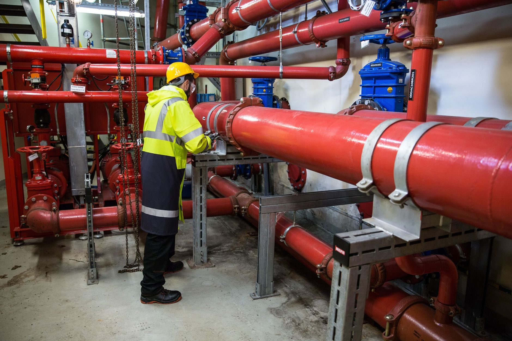
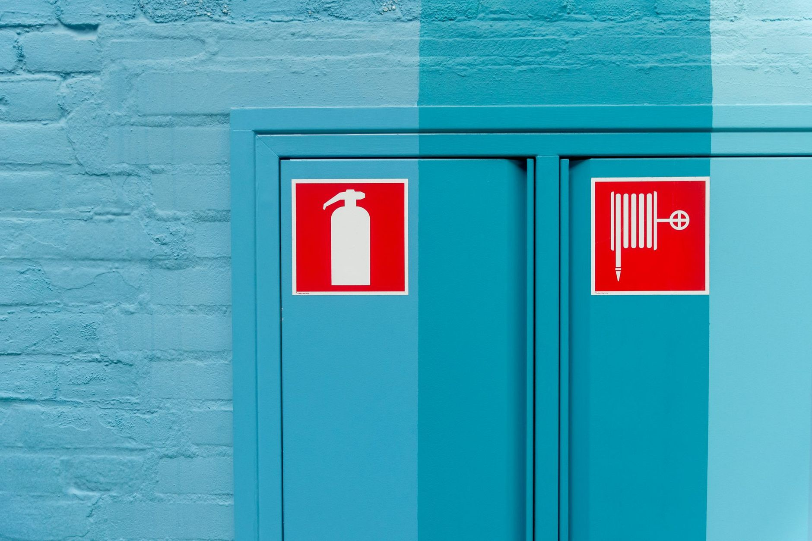
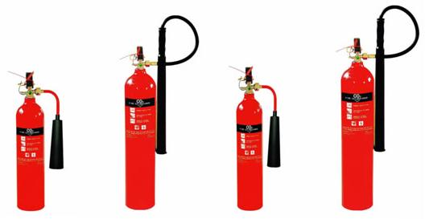
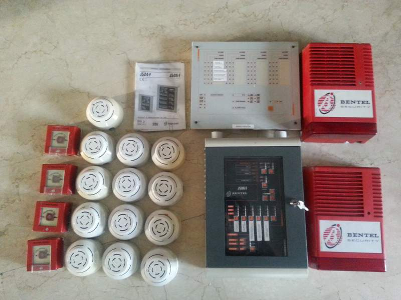
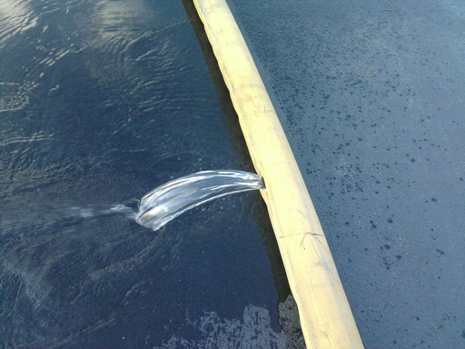
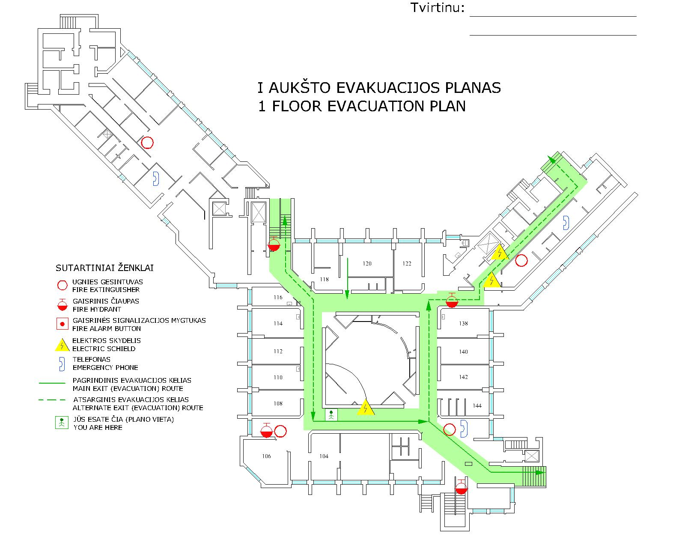
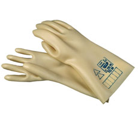
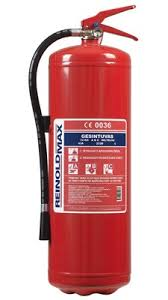
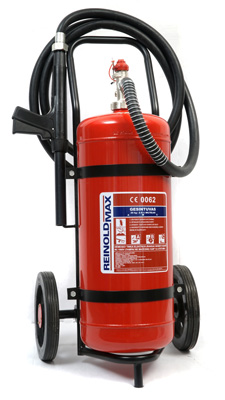
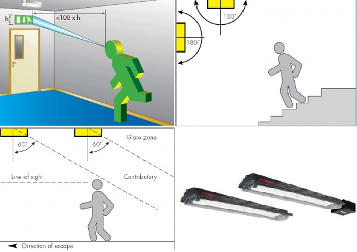

- Pradžia
- Paslaugos
Paslaugos ir kainos
Visos paslaugos ir jų kainoraščiai vienoje vietoje: nuo gesintuvų patikros iki mokymų ir dokumentų. Atvykstame į objektą visoje Lietuvoje.
- Paslaugų su kainoraščiais
- 10
- Kitų paslaugų grupių
- 10
- Metų patirtis
- 20


Kainoraščiuose nurodytos mažmeninės kainos. Norėdami sužinoti kainą didesniam kiekiui, siųskite užklausimą el. paštu info@geslita.lt.
Gesintuvų patikra ir pildymas
Visų rūšių ir tipų ugnies gesintuvų patikra, pildymas ir techninis aptarnavimas visoje Lietuvoje.
Kaina priklauso nuo gesintuvo tipo ir talpos. Nurodytos mažmeninės kainos; norėdami sužinoti savo kainas, siųskite užklausimą el. paštu info@geslita.lt.
Atliekame visų rūšių ir tipų ugnies gesintuvų patikrą, pildymą ir techninį aptarnavimą visoje Lietuvoje: aptarnaujame miltelinius, angliarūgšties ir vandens putų gesintuvus.
Patikros metu patikrinama gesintuvo darbinė būklė, prireikus gesintuvas užpildomas ir perdažomas. Miltelinių ir vandens putų gesintuvų techninės priežiūros instrukcijas rasite žemiau.
Taip pat prekiaujame visų rūšių ugnies gesintuvais, prižiūrime ir komplektuojame objektų gaisrinį ūkį.
- Miltelinių, angliarūgšties ir vandens putų gesintuvų techninis aptarnavimas
- Darbinės būklės patikrinimas
- Gesintuvų užpildymas
- Gesintuvų dažymas
- Darbai atliekami visoje Lietuvoje

| Gesintuvas | Patikros kaina | Užpildymo kaina |
|---|---|---|
| 2 kg miltelinis gesintuvas MG-2 | nuo 5,79 € | nuo 7,01 € |
| 4 kg miltelinis gesintuvas MG-4 | nuo 5,79 € | nuo 10,51 € |
| 6 kg miltelinis gesintuvas MG-6 | nuo 5,79 € | nuo 12,62 € |
| 12 kg miltelinis gesintuvas MG-12 | nuo 5,79 € | nuo 25,23 € |
| 25 kg miltelinis gesintuvas MG-25 | nuo 20,51 € | nuo 69,00 € |
| 50 kg miltelinis gesintuvas MG-50 | nuo 40,00 € | nuo 137,50 € |
| 100 kg miltelinis gesintuvas MG-100 | nuo 60,00 € | nuo 275,00 € |
Nurodytos mažmeninės kainos. Norėdami sužinoti savo kainas, siųskite užklausimą el. paštu info@geslita.lt.
| Gesintuvas | Patikros kaina | Užpildymo kaina |
|---|---|---|
| 2 l angliarūgštinis gesintuvas AG-2 | nuo 5,26 € | 7,01 € |
| 3 l angliarūgštinis gesintuvas AG-3 | nuo 5,26 € | 7,01 € |
| 5 l angliarūgštinis gesintuvas AG-5 | nuo 5,26 € | 7,01 € |
| 8 l angliarūgštinis gesintuvas AG-8 | nuo 7,01 € | 10,51 € |
| 10 l angliarūgštinis gesintuvas AG-10 | nuo 7,01 € | 10,51 € |
| 25 l angliarūgštinis gesintuvas AG-25 | nuo 8,76 € | 21,03 € |
| 50 l angliarūgštinis gesintuvas AG-50 | nuo 14,02 € | 29,79 € |
Nurodytos mažmeninės kainos. Norėdami sužinoti savo kainas, siųskite užklausimą el. paštu info@geslita.lt.
| Gesintuvas | Dažymo kaina | Užpildymo kaina |
|---|---|---|
| Vandens putų gesintuvas VPG-5 | 1,75 € | 5,26 € |
| Vandens putų gesintuvas VPG-(9-10) | 1,75 € | 7,01 € |
| Vandens putų gesintuvas VPG-50 | 17,52 € | 17,52 € |
| Vandens putų gesintuvas VPG-100 | 26,28 € | 34,75 € |
Nurodytos mažmeninės kainos. Norėdami sužinoti savo kainas, siųskite užklausimą el. paštu info@geslita.lt.
Plačiau: miltelinių, vandens putų ir angliarūgštės gesintuvų paskirtis
Miltelinis gesintuvas. Tai universali ugnies gesinimo priemonė, tinkanti gesinti A, B, C, D klasės gaisrus (priklausomai nuo miltelių rūšies). Taip pat juo galima gesinti elektros įrenginius. Miltelinis gesintuvas chemiškai stabdo degimą. Šie gesintuvai efektyviai gesina ne tik A, B bei C klasių gaisrus, bet tinka gesinti ir neišjungtus elektros prietaisus, todėl juos galima vadinti universaliaisiais gesintuvais, galinčiais puikiai padėti apsisaugoti nuo gaisro jūsų namuose.
Vandens putų gesintuvas. Pagrindinė gesinimo medžiaga - putos: oro, vandens ir putokšlio (putodario) mišinys. Tinka gesinti A klasės (degant kietoms medžiagoms susidaro įkaitusios anglys) ir B klasės (dega degūs skysčiai ar tokios medžiagos, kurios degdamos skystėja) gaisrus, bet juo negalima gesinti dujų ir elektros įrenginių. Būtina laikyti šildomose patalpose.
Angliarūgštės gesintuvas. Pagrindinė gesinimo medžiaga - anglies dioksidas. Gesina B ir C klasės (dega degios dujos) gaisrus, tinka elektros įrenginių gesinimui. Mažai veiksmingas gesinant A ir D klasės (dega degūs metalai) gaisrus. Gesintuvai su angliarūgštės užpildu rekomenduojami elektros gaisrams gesinti (kompiuterių, jungiklių, garso įrangos, įvairių mechanizmų gaisrams). Gesinimo medžiaga visiškai išsisklaido ore ir nepalieka jokių pėdsakų. Šio tipo gesintuvai taip pat gali būti naudojami B klasės gaisrams - degiems skysčiams arba skystėjančioms medžiagoms (benzinui, naftos produktams, riebalams, lakams, dervai, vaškui, eteriui, alkoholiui ir kt.) gesinti. Rekomenduojama papildomai turėti vandens putų arba miltelinius gesintuvus, kurie užtikrintų apsaugą nuo A klasės gaisrų.
- Miltelinių gesintuvų techninės priežiūros instrukcija (PDF, atsidaro naujame lange)
- Vandens putų gesintuvų techninės priežiūros instrukcija (PDF, atsidaro naujame lange)
Gaisrinės signalizacijos patikra, remontas ir įrengimas
Gaisrinės signalizacijos įrengimas, kasmetinė patikra ir remontas.
Patikros kaina priklauso nuo patalpų ploto, aukščio ir daviklių kiekio.
Gaisrinė signalizacija skirta automatiškai aptikti degimo ar dūmų židinius: sistemą sudaro dūminiai, temperatūriniai ir liepsnos detektoriai, rankiniai gaisro pavojaus mygtukai ir signaliniai įrenginiai - vidinės sirenos, blykstės bei lauko sirenos su blykste. Atliekame gaisrinės signalizacijos kabelių instaliaciją, montavimą, derinimą, programavimą, remontą ir kasmetinę patikrą, o patikros rezultatus įforminame tam skirtame žurnale arba akte. Taip pat atliekame automatinių gesinimo sistemų techninę priežiūrą.
- Gaisrinės signalizacijos įrengimas: kabelių instaliacija, montavimas, derinimas, programavimas
- Kasmetinė techninės būklės patikra su įrašu žurnale arba aktu
- Gedimų paieška ir remontas
- Detektorių ir gaisro pavojaus mygtukų patikra
- Automatinių gesinimo sistemų techninė priežiūra

Priešgaisrinio vandentiekio techninis aptarnavimas
Gaisrinių čiaupų patikra, slėginių gaisrinių žarnų išbandymas, perkantavimas ir įrišimas.
Gaisrinio čiaupo patikros kaina. Gaisrinės žarnos patikra nuo 10,51 €, įrišimas nuo 3,50 €.
Atliekame gaisrinių čiaupų patikrą ir gaisrinių čiaupų keitimo darbus, išbandome slėgines gaisrines žarnas, jas džioviname, įrišame ir perkantuojame.
Prižiūrime ir komplektuojame objektų gaisrinį ūkį: prekiaujame gaisrinio vandentiekio įranga ir gaisrinių čiaupų komplektacijomis - spintelėmis, žarnomis, čiaupais, švirkštais, gaisrine armatūra, taip pat siurbliais ir hidrantais.
- Gaisrinio čiaupo patikra
- Gaisrinės žarnos patikra (išbandymas, perkantavimas)
- Gaisrinės žarnos įrišimas
- Gaisrinių žarnų džiovinimas
- Gaisrinių čiaupų keitimo darbai
- Gaisrinių čiaupų komplektavimas (spintelės, žarnos, čiaupai, švirkštai, armatūra)

| Paslaugos pavadinimas | Kaina |
|---|---|
| Gaisrinio čiaupo patikra | nuo 6,31 € |
| Gaisrinės žarnos patikra (išbandymas, perkantavimas) | nuo 10,51 € |
| Gaisrinės žarnos įrišimas (iš vienos pusės) | nuo 3,50 € |
| Gaisrinių čiaupų patikrinimo ir registravimo žurnalas | nuo 5,26 € |
| Ženklas D.2 „Gaisrinis čiaupas“ 130x130 mm | 1,80 € |
| Ženklas F.2 „Ugniagesių iškvietimas 112“ 100x180 mm | 1,80 € |
Nurodytos mažmeninės kainos.
Evakuacijos planų braižymas
Braižome įvairaus dydžio ir sudėtingumo evakuacijos (evakavimo) planus, juos rėminame ir laminuojame.
Teisinis pagrindas: LR Darbo kodekso 266 str.; LR Darbuotojų saugos ir sveikatos įstatymo 22 str.; Bendrųjų gaisrinės saugos taisyklių (Žin., 2010, Nr. 99-5167) 64 p. ir 6 priedas
Evakavimo plano rengimo kaina.
Braižome įvairaus dydžio ir sudėtingumo evakuacijos / evakavimo planus pagal Bendrųjų gaisrinės saugos taisyklių 6 priedo reikalavimus, planus rėminame ir laminuojame. Naujiena - tamsoje šviečiantys evakuacijos planai.
Evakavimo planus privalo turėti kiekviena įmonė, įstaiga ir organizacija, nepriklausomai nuo darbuotojų skaičiaus (LR Darbo kodekso 266 str., LR Darbuotojų saugos ir sveikatos įstatymo 22 str.). Taip pat konsultuojame rengiant evakuacijos pratybas, parengiame ekstremalių situacijų valdymo planą ir teikiame priešgaisrinės bei civilinės saugos konsultacijas.
- Evakuacijos / evakavimo planų braižymas
- Tamsoje šviečiantys evakuacijos planai
- Planų rėminimas ir laminavimas
- Konsultacijos rengiant evakuacijos pratybas
- Ekstremalių situacijų valdymo plano parengimas
- Priešgaisrinės ir civilinės saugos konsultacijos

Darbuotojų priešgaisrinės saugos mokymai
Darbuotojų ir valstybės tarnautojų priešgaisrinės saugos mokymai ir atestavimas pagal 3 valandų programą.
Teisinis pagrindas: LR Priešgaisrinės saugos įstatymo 11 str. 3 d. 6 p. (Žin., 2002, Nr. 123-5518); Bendrųjų gaisrinės saugos taisyklių 12 p.; Minimalūs reikalavimai valstybės tarnautojų ir darbuotojų priešgaisrinės saugos mokymo programoms (Žin., 2003, Nr. 63-2873; Žin., 2012, Nr. 105-5360)
Organizuojame darbuotojų (valstybės tarnautojų) priešgaisrinės saugos mokymus ir atestavimą pagal „Minimalius reikalavimus valstybės tarnautojų ir darbuotojų priešgaisrinės saugos mokymo programoms“. Mokymo programa trunka 3 valandas ir apima medžiagų degumą bei gaisrų priežastis, teisės aktų reikalavimus objektui ir darbo barams, gaisrinę įrangą, veiksmus kilus gaisrui bei darbuotojų teises, pareigas ir atsakomybę.
Juridinių asmenų vadovai privalo organizuoti visų darbuotojų mokymą ir atestavimą kas 3 metus, nepriklausomai nuo veiklos rūšies ir darbuotojų skaičiaus. Sutartu laiku atvykstame į mokymų vietą su visomis reikalingomis priemonėmis (garso ir vaizdo aparatūra, gaisrinės saugos ženklų pavyzdžiais), pravedame mokymus, atestuojame darbuotojus ir sėkmingai išlaikiusiems įskaitas išduodame pažymėjimus.
- Priešgaisrinės saugos mokymai pagal 3 val. programą
- Darbuotojų atestavimas ir pažymėjimų išdavimas
- Mokymai jūsų objekte su visomis reikalingomis priemonėmis
- Įmonių, įstaigų ir organizacijų vadovų priešgaisrinės saugos mokymo kursas
- Gaisrinės saugos instrukcijų ir darbuotojų saugos ir sveikatos dokumentacijos rengimas
| Tema | Trukmė |
|---|---|
| Medžiagų degumas. Pagrindinės gaisrų priežastys | 30 min. |
| Pagrindiniai priešgaisrinę saugą reglamentuojančių teisės aktų reikalavimai objektui ir atskiriems darbo barams | 60 min. |
| Gaisrinė įranga ir jos naudojimo ypatumai | 30 min. |
| Veiksmai kilus gaisrui | 45 min. |
| Darbuotojų teisės ir pareigos priešgaisrinės saugos srityje. Atsakomybė už teisės aktų pažeidimus | 15 min. |
Temos pagal „Minimalius reikalavimus valstybės tarnautojų ir darbuotojų priešgaisrinės saugos mokymo programoms“.
Dielektrinių priemonių patikra
Dielektrinių apsaugos priemonių, izoliuotų įrankių ir apsaugos nuo kritimo iš aukščio priemonių periodiniai bandymai.
Kainą pateikiame pagal užklausą.
Atliekame dielektrinių apsaugos priemonių - pirštinių, izoliuotų įrankių, įtampos indikatorių, izoliacinių lazdų, kaliošų ir botų - bei apsaugos nuo kritimo iš aukščio priemonių (apsauginių diržų ir lynų) periodinius bandymus.
Taip pat atliekame varžų matavimą ir aukštalipių įrangos patikrą.
- Dielektrinių pirštinių, kaliošų ir botų bandymai
- Izoliuotų įrankių ir įtampos indikatorių patikra
- Izoliacinių lazdų, gaubtų ir antdėklų bandymai
- Apsaugos nuo kritimo iš aukščio priemonių (diržų, lynų) ir monterių nagių patikra
- Aukštalipių įrangos patikra
- Varžų matavimas

| Priemonė | Periodiškumas |
|---|---|
| Dielektrinės pirštinės | kas 6 mėn. |
| Izoliuoti įrankiai (replės, atsuktuvai, žnyplės, monterių peiliai, gaisrininkų žirklės) | kas 12 mėn. |
| Įtampos indikatoriai | kas 12 mėn. |
| Fazometrai iki 10 kV | kas 12 mėn. |
| Operatyvinės izoliacinės lazdos | kas 24 mėn. |
| Izoliaciniai kaliošai | kas 12 mėn. |
| Izoliaciniai botai | kas 36 mėn. |
| Elektros matavimo replės | kas 24 mėn. |
| Izoliaciniai gaubtai | kas 12 mėn. |
| Izoliuojantieji antdėklai | kas 24 mėn. |
| Apsaugos priemonės nuo kritimo iš aukščio (apsauginiai diržai ir lynai) | kas 6 mėn. |
| Monterių nagės | kas 6 mėn. |
Ugnies gesintuvų nuoma
Miltelinių gesintuvų MG-6 ir MG-25 nuoma.
MG-6 - 6,00 €, MG-25 - 25,00 €.
Nuomojame miltelinius gesintuvus: 6 kg talpos MG-6 ir 25 kg talpos MG-25.
- Miltelinio gesintuvo MG-6 nuoma
- Miltelinio gesintuvo MG-25 nuoma


| Gesintuvas | Kaina |
|---|---|
| Miltelinio gesintuvo MG-6 nuoma | 6,00 € |
| Miltelinio gesintuvo MG-25 nuoma | 25,00 € |
Evakuacijos ir avarinių šviestuvų montavimas
Evakuacinio ir avarinio apšvietimo šviestuvų montavimas ir rekomendacijos dėl jų išdėstymo.
Kainą pateikiame pagal užklausą.
Montuojame evakuacijos ir avarinius šviestuvus ir konsultuojame dėl jų išdėstymo pagal Europos standartą EN 1838 ir Apšvietimo elektros įrenginių įrengimo taisykles. Avarinis apšvietimas įsijungia automatiškai dingus pagrindinio apšvietimo maitinimui ir užtikrina saugų žmonių pasišalinimą iš pastato kilus gaisrui ar kitam pavojui.
Evakuacinio apšvietimo šviestuvai įrengiami prie išėjimo durų, laiptų, evakuacijos kelių posūkių, šakojimosi ir grindų lygio pasikeitimo vietose, ne žemiau kaip 2 m nuo grindų (evakavimo kelių nurodomieji ženklai - 2-2,5 m aukštyje), o autonominis maitinimo šaltinis turi maitinti šviestuvus ne trumpiau kaip 1 valandą.
- Evakuacinių šviestuvų montavimas
- Avarinio (budinčio) apšvietimo šviestuvų montavimas
- Rekomendacijos dėl šviestuvų išdėstymo ir ženklų matymo atstumų
- Avarinio išėjimo šviestuvų pardavimas

Registravimo / registracijos žurnalai
Darbo saugos ir gaisrinės saugos registravimo žurnalai A-5 ir A-4 formato bei asmens medicininės knygelės.
A-5 formato žurnalas nuo 3,50 €, A-4 formato - nuo 5,25 €.
Parduodame teisės aktuose numatytus registravimo / registracijos žurnalus: darbo sutarčių, darbuotojų darbo pažymėjimų, darbuotojų saugos ir sveikatos instruktavimų, gaisrinės saugos instruktažų, nelaimingų atsitikimų darbe ir kitus. Žurnalai siūlomi A-5 ir A-4 formato.
Taip pat parduodame asmens medicinines knygeles (F Nr. 048/a).
- Darbo sutarčių ir darbuotojų darbo pažymėjimų registravimo žurnalai
- Darbuotojų saugos ir sveikatos instruktavimų registravimo žurnalai
- Gaisrinės saugos instruktažų registravimo žurnalai
- Nelaimingų atsitikimų darbe registravimo žurnalas
- Valstybinių kontrolės institucijų patikrinimų registravimo žurnalas
- Asmens medicininės knygelės F Nr. 048/a
| Dokumento pavadinimas | Reglamentuoja | Kaina |
|---|---|---|
| Asmens medicininė knygelė F Nr. 048/a | Asmenų, dirbančių darbo aplinkoje, kurioje galima profesinė rizika (kenksmingų veiksnių poveikis ir (ar) pavojingas darbas), privalomo sveikatos tikrinimo tvarkos aprašas (Žin., 2010, Nr. 4-163) | 1,05 € |
Kaina už vienetą.
Kainos perskaičiuotos iš ankstesnio kainoraščio litais (3,4528 Lt = 1 €) ir yra orientacinės.
Kitos paslaugos verslui
Be priešgaisrinės saugos darbų, padedame sutvarkyti ir kitus įmonės veiklai reikalingus dokumentus, leidimus ir mokymus. Išskleiskite grupę ir peržiūrėkite visą sąrašą.
Visuomenės sveikata
- Leidimai-higienos pasai: dokumentų parengimas leidimams-higienos pasams gauti laidojimo namams, grožio salonams ir juose pagal patentus ar verslo liudijimus dirbantiems asmenims, globos namams, darželiams, mokykloms, viešbučiams, stomatologijos kabinetams.
- Pastatų / patalpų paskirties pakeitimas leidimui-higienos pasui tam tikrai veiklai gauti.
- Valgiaraščių parengimas ir derinimas su VSC ikimokyklinio ugdymo įstaigoms, mokykloms, globos įstaigoms, vaikų poilsio stovykloms.
- Kenkėjų kontrolė - privalomasis profilaktinis aplinkos kenksmingumo pašalinimas: dezinfekcija, dezinsekcija, deratizacija, fumigacija. Vabzdžių (tarakonų, skruzdžių, blusų, blakių, uodų, musių, širšių, kandžių), graužikų (pelių, žiurkių), grūdinių ir kitų produktų kenkėjų, mikroorganizmų, bakterijų, grybelių, pelėsių naikinimas, kontrolė ir monitoringas globos įstaigose, darželiuose, mokyklose, kavinėse, restoranuose, viešbučiuose, kaimo turizmo sodybose, maisto pramonės ir kituose objektuose.
- Žurnalai ir blankai: kosmetikos gaminių registras, sterilizacijos, legionelių prevencijos ir kiti žurnalai, grožio paslaugų procedūrų aprašai, biocidai grožio salonams, medicinos knygelių blankai.
- PVSV - poveikio visuomenės sveikatai vertinimo ataskaitų parengimas (dėl planuojamos ūkinės veiklos galimybių išdavimo).
Konsultacijos veterinarinės saugos klausimais
- Maisto tvarkymo subjekto patvirtinimo pažymėjimo gavimas.
- Maisto tvarkymo proceso aprašymo parengimas.
- Kenkėjų kontrolė.
Konsultacijos VDI klausimais
- Profesinės ligos: konsultavimas darbinės veiklos aprašymo parengimo klausimais.
- Profesinės sveikatos specialisto paslaugos.
Higienos įgūdžių mokymai
- Darbuotojams, kurių veikla susijusi su nuodingosiomis medžiagomis.
- Darbuotojams, tvarkantiems medicinines atliekas sveikatos priežiūros įstaigose.
- Vandens tiekimo įmonių darbuotojams.
- Dirbantiems galimos profesinės rizikos sąlygomis.
- Areštinių ir laisvės atėmimo vietų darbuotojams.
- Ikimokyklinio ugdymo, formaliojo ir neformaliojo švietimo, kvalifikacijos tobulinimo įstaigų, mokyklų, psichologinių ir pedagoginių tarnybų darbuotojams.
- Bendrabučių, viešbučių, pensionų, vaikų ir suaugusiųjų globos įstaigų, nakvynės namų, kaimo turizmo sodybų ir kitų apgyvendinimo paslaugų darbuotojams, pagalbą namuose teikiantiems asmenims, taip pat pirčių, baseinų, saunų, plaukų, veido, kūno ir nagų priežiūros, tatuiravimo, ilgalaikio (permanentinio) makiažo, papuošalų vėrimo ir kitų grožio bei sveikatingumo paslaugų darbuotojams.
Pirmos pagalbos mokymai
- Ugniagesiams gelbėtojams, eismo priežiūrą vykdantiems policijos pareigūnams, policijos, gaisrinių ir greitosios medicinos pagalbos transporto priemonių vairuotojams, paplūdimių gelbėtojams.
- Asmenims, kurių veikla susijusi su ginklais: saugos tarnybų darbuotojams, medžiotojams, šaudymo sporto sportininkams ir kitiems leidimus laikyti ir nešioti ginklus turintiems asmenims.
- C, D ir E kategorijų kelių transporto priemonių vairuotojams, geležinkelių, oro ir vandens transporto priemones valdantiems ir keleivius aptarnaujantiems darbuotojams.
- Dirbantiems kenksmingų veiksnių aplinkoje ir pavojingus darbus, geležinkelio, oro ir vandens transporto, ryšių objektų, kelių priežiūros darbuotojams, darbo saugos ir sveikatos tarnybų specialistams.
- Švietimo, kultūros, sporto, apgyvendinimo ir sveikatingumo paslaugų darbuotojams: pedagogams, treneriams, kazino inspektoriams, renginių organizatoriams, viešbučių, globos įstaigų, nakvynės namų, kaimo turizmo sodybų darbuotojams, pirtininkams, baseinų, saunų, grožio ir sveikatingumo paslaugų teikėjams.
- Statutiniams valstybės tarnautojams (VSD, STT, Muitinės departamento, Priešgaisrinės apsaugos ir Policijos, Vadovybės apsaugos departamentų, Valstybės sienos apsaugos tarnybos), Kalėjimų departamento ir jam pavaldžių įstaigų pareigūnams, teisėjams, prokurorams, antstoliams, ikiteisminio tyrimo pareigūnams.
Kiti mokymai
- Mokymas apie alkoholio ir narkotikų žalą žmogaus sveikatai (praradus vairuotojo teises).
Konsultacijos NDNT klausimais
- Teisinės ir medicininės konsultacijos invalidumo, neįgalumo, SP-1 ir SP-2 klausimais (NDNT).
- Konsultacijos globos ir rūpybos klausimais, kai asmeniui skirta SP-1.
- Dokumentų parengimas į teismus norint globoti ar rūpintis neįgaliu asmeniu, giminaičiais.
- Konsultacijos įvaikinimo ir laikinos globos klausimais.
Licencijos
- Licencijos alkoholio prekybai (mažmena, didmena) gavimas - dokumentų parengimas licencijas išduodančiai institucijai.
- Prarastos ar sustabdytos alkoholio licencijos atstatymas.
- Licencijos tabakui.
- Licencijos globos įstaigoms.
Teisinės paslaugos
- Administracinė teisė: baudų apskundimas.
- Šeimos teisė: santuokos nutraukimas, išlaikymo pilnamečiams vaikams priteisimas, tėvystės nustatymas, įvaikinimas, globos ir rūpybos pilnamečiams ir nepilnamečiams nustatymas, teismo leidimai parduoti ar įkeisti turtą turint nepilnamečių vaikų.
- Paveldėjimo teisė: juridinio fakto, kad įpėdinis palikimą priėmė faktiškai pradėdamas jį valdyti, nustatymas.
- Skolų išreikalavimas: neteisminis ir teisminis skolų išreikalavimas, pretenzijų ir ieškinių rengimas.
- Darbo teisė: darbdavių ir darbuotojų konsultavimas, darbo sutarčių, pareiginių nuostatų ir darbo tvarkos taisyklių rengimas, darbdavio ar darbuotojo padarytos žalos atlyginimas.
- Įmonių teisė: įmonių, filialų, atstovybių steigimas.
- Viešieji pirkimai: konsultacijos, dokumentų ir skundų rengimas, atstovavimas.
- Sutarčių teisė: sutarčių sudarymas, pakeitimas, nutraukimas.
Kitos paslaugos
- Objektų gaisrinio ūkio priežiūra ir komplektavimas.
- Automatinių gesinimo sistemų techninė priežiūra.
- Varžų matavimas.
- Aukštalipių įrangos patikra.
- Gaisrinės saugos instrukcijos rengimas.
- Darbuotojų saugos ir sveikatos dokumentacijos rengimas.
- Ekstremalių situacijų valdymo plano parengimas.
- Logotipų siuvinėjimas ant drabužių (šilkografija).
Reikia pasiūlymo jūsų objektui?
Paskambinkite arba parašykite: aptarsime įrangos kiekį, terminus ir paruošime pasiūlymą.